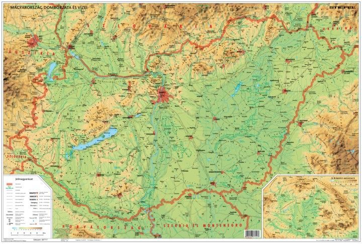
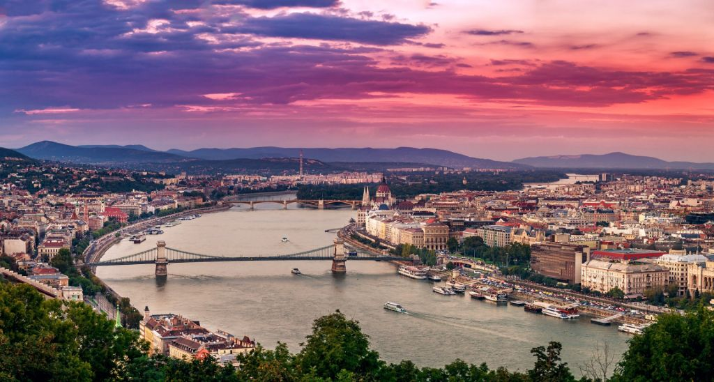

Magyarország állam Közép-Európában, a Kárpát-medence közepén, amely 1989 óta független parlamentáris
köztársaság. Északról Szlovákia, északkeletről Ukrajna, keletről és délkeletről Románia, délről
Szerbia és Horvátország, délnyugatról Szlovénia, nyugatról pedig Ausztria határolja. Területe 93 030
négyzetkilométer, népessége pedig közel tízmillió fő, így az Európai Unió közepes méretű és közepes
népességű tagállamai közé tartozik.
Hivatalos nyelve a magyar, ami a legnagyobb az uráli nyelvcsaládba tartozó nyelvek közül.
Fővárosa és legnépesebb városa Budapest, amely világvárosnak számít.
Magyarország jelenlegi határai nagyjából egyeznek az 1920-ban, az első világháborút lezáró trianoni békeszerződésben kijelölt határokkal. Ennek következményeként az ország elvesztette területének 71, lakosságának 58 százalékát.
A két világháború között számos kormány megalakult, többek között kommunista kormány is,
melynek bukása és felszámolása után megalakult két politikai vezetőség, melyek mindkét
irányba más-más érdekeket szolgáltak ki. Magyarország a Horthy-kormány mellett a revízió
reményében, a Szálasi-kormány mellett a német érdekeket kiszolgálva lépett be a második
világháborúba a de a kisebb-nagyobb sikeres harcok és a súlyos veszteségek ellenére sem
ért el tartós áttörést, az 1947-es párizsi békeszerződés pedig kialakította a mai országhatárokat
. A háborút követően a Szovjetunió megszállási övezetébe került az ország.
A rendszerváltásig kétszer került Magyarország a világpolitika középpontjába:
először az 1956-os forradalom kapcsán, másodszor az 1989-es páneurópai piknik okán.